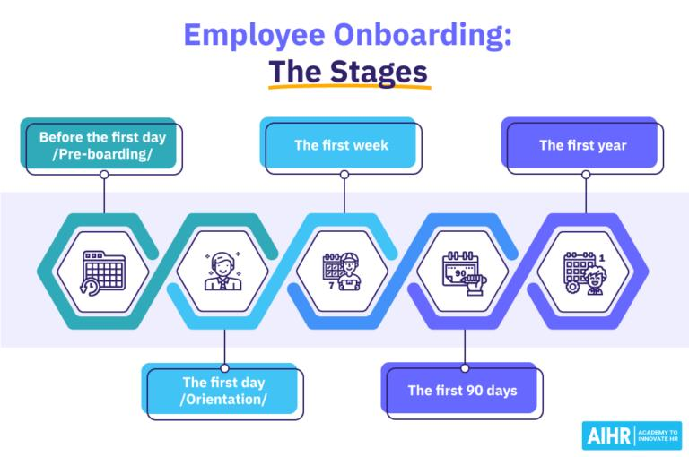
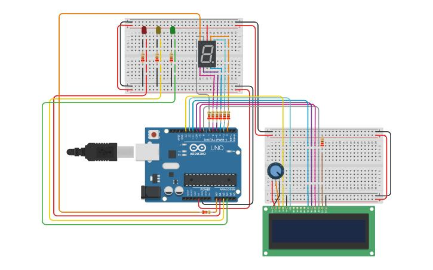
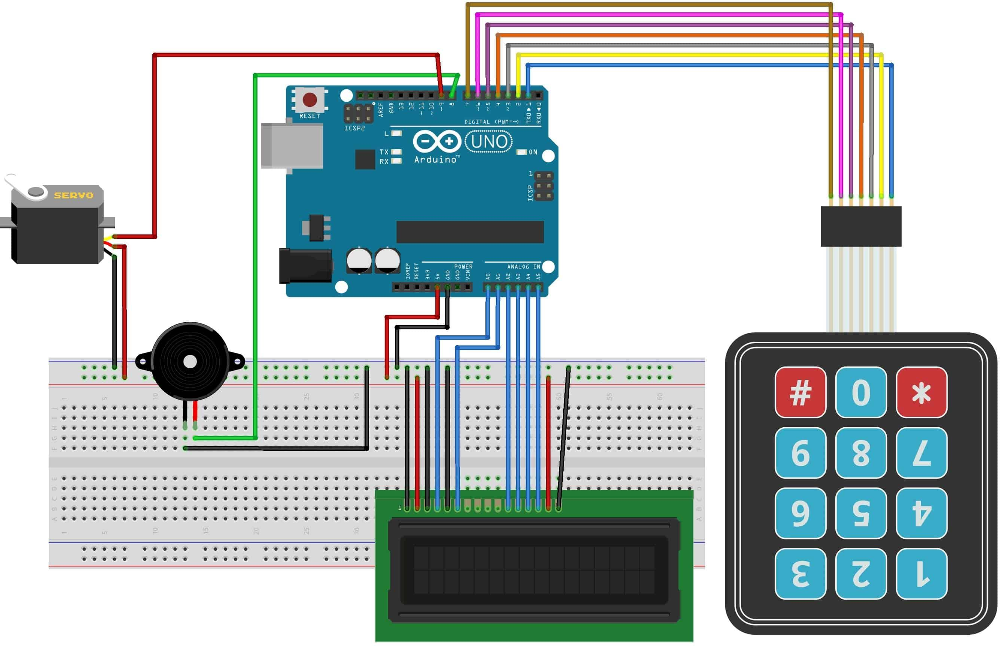
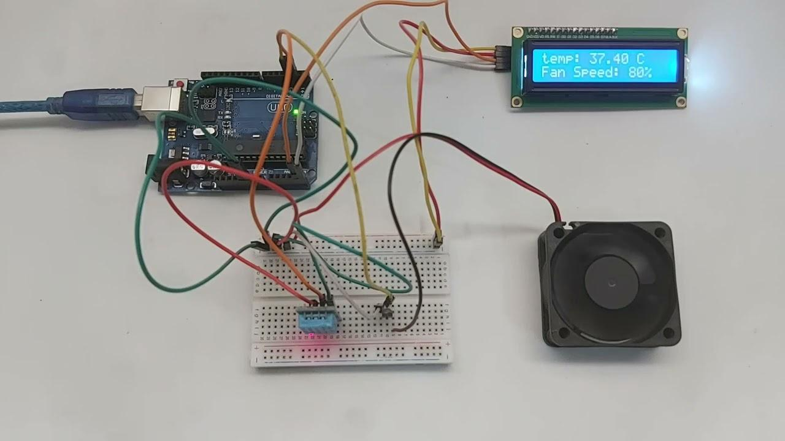
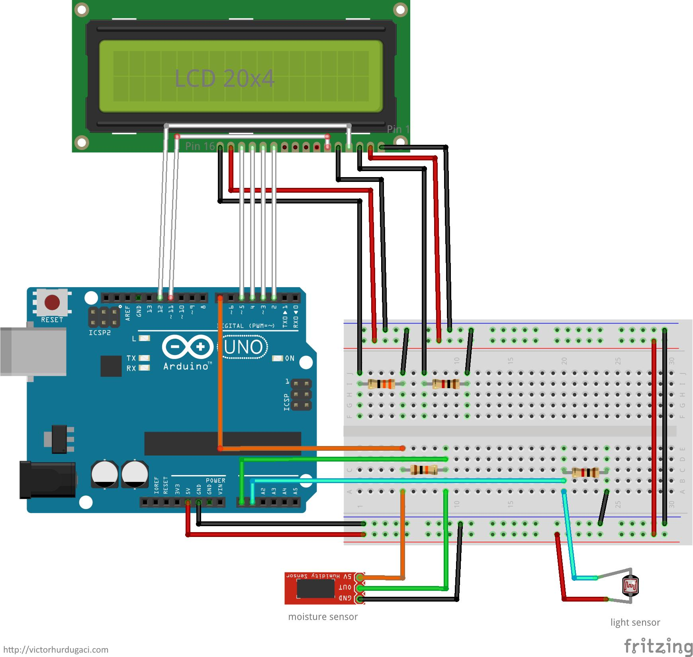
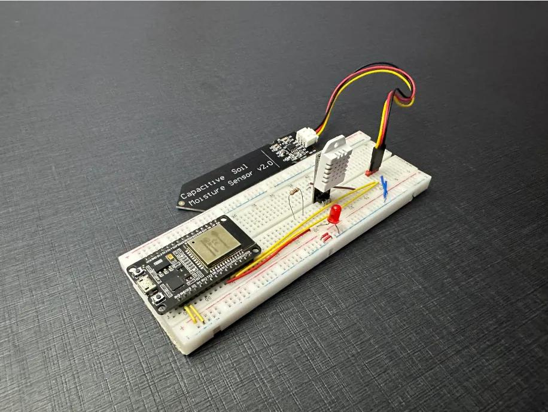
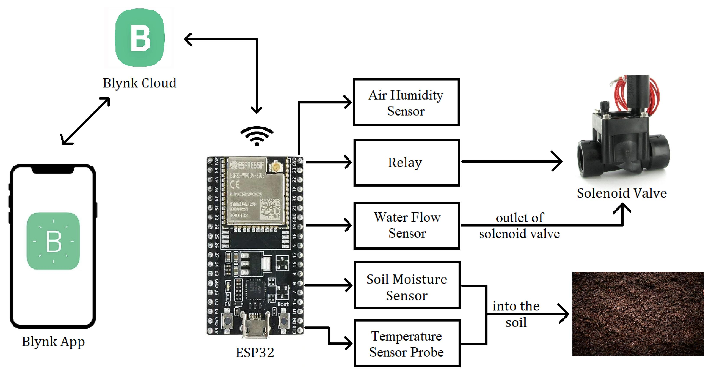
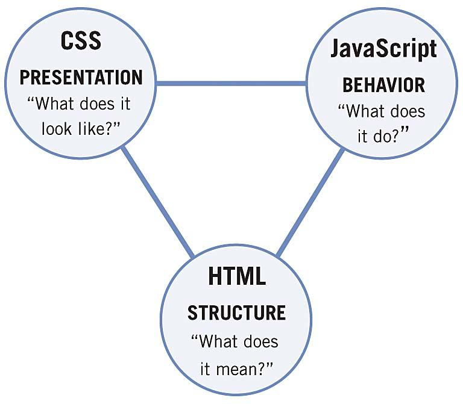

agasaro nicia
i am learning web development in san tech.
this web page shows my journey of internship at santech
i am learning web development in san tech.
this web page shows my journey of internship at santech
activity of the day was to learn abbout
company and it's culture,and
familiar with the tool and technology used
by team.i alsohad apportunity to meet
my colleagnues and learn about thier roles and
responsiblilities overall .it was a great first day
and i am excited to continue learning and contributing
to the team throughout my internship

day to remember
activvity of the day was learn about how we turn on traffic light system in that day we know different between anode aand cathoo aand how cathode is shorrtly and it connect on ground and cathodee is connect to pin and it discussed about serial monitorr and it's learn about thinker card thinkercard is simulation software that help to built and give the code

at this day we learn about hoe to use liquid crystal diode (LCD) it used on it to display the traffic light information where the red led turns on the display stop green led means go yellow means gey ready

at this day we learn about hoe to use liquid crystal diode (LCD) it used on it to display the traffic light information where the red led turns on the display stop green led means go yellow means gey ready
at this day we learn about hoe to use liquid crystal diode (LCD) it used on it to display the traffic light information where the red led turns on the display stop green led means go yellow means gey ready
at this day we learn about hoe to use liquid crystal diode (LCD) it used on it to display the traffic light information where the red led turns on the display stop green led means go yellow means gey ready
at this day day we use the lcd, keypad and servo motor,buzzer,leds(blueled and redled) this projhect is called security controll ,The people came and enter the password if is correct in the lcd display correct blueled turn on and buzzer turn on in the shorttime then servo motor turn around to enable apeople to continue and if not correct display in the lcd wrong password and then the servo motor do not turn around buzzer turn on the long time

we do aproject at this where requirement are dht11,buzzer,led,lcd and fan this project is called temperature detector where it work in more homes this is used to reduce the temperature in the house by automatic turn on fan

at this day we do aproject we use the following requirement such as soil moisture sensor,pump and lcd where the soil moisture sensor detect the level of humidity and then the data that is taken by sensor displayed in lcd and pump turn on automatic

at this day we learn about how we create account
on blynk
at this day we do asmart irrigation using ESP 32 INSTEAD Of arduino

at this day we learn how can connect smart irrigation SYSTEM on blynk

at this day we learn about how can make aweb page with adding image and link
we learn how style your web by using css

ACTIVITY of the day was to learn about the company and its culture,and to get familiar with the tools and technology used by the team. I also had opportunity to meet my colleagnues and learn about their roles and responsiblities. overall ,it was great first day and i am excited to continue learning and contributing to the team throughout my internship.
ACTIVITY of the day was to learn about the company and its culture,and to get familiar with the tools and technology used by the team. I also had opportunity to meet my colleagnues and learn about their roles and responsiblities. overall ,it was great first day and i am excited to continue learning and contributing to the team throughout my internship.
ACTIVITY of the day was to learn about the company and its culture,and to get familiar with the tools and technology used by the team. I also had opportunity to meet my colleagnues and learn about their roles and responsiblities. overall ,it was great first day and i am excited to continue learning and contributing to the team throughout my internship.
ACTIVITY of the day was to learn about the company and its culture,and to get familiar with the tools and technology used by the team. I also had opportunity to meet my colleagnues and learn about their roles and responsiblities. overall ,it was great first day and i am excited to continue learning and contributing to the team throughout my internship.
ACTIVITY of the day was to learn about the company and its culture,and to get familiar with the tools and technology used by the team. I also had opportunity to meet my colleagnues and learn about their roles and responsiblities. overall ,it was great first day and i am excited to continue learning and contributing to the team throughout my internship.
ACTIVITY of the day was to learn about the company and its culture,and to get familiar with the tools and technology used by the team. I also had opportunity to meet my colleagnues and learn about their roles and responsiblities. overall ,it was great first day and i am excited to continue learning and contributing to the team throughout my internship.
ACTIVITY of the day was to learn about the company and its culture,and to get familiar with the tools and technology used by the team. I also had opportunity to meet my colleagnues and learn about their roles and responsiblities. overall ,it was great first day and i am excited to continue learning and contributing to the team throughout my internship.
ACTIVITY of the day was to learn about the company and its culture,and to get familiar with the tools and technology used by the team. I also had opportunity to meet my colleagnues and learn about their roles and responsiblities. overall ,it was great first day and i am excited to continue learning and contributing to the team throughout my internship.
ACTIVITY of the day was to learn about the company and its culture,and to get familiar with the tools and technology used by the team. I also had opportunity to meet my colleagnues and learn about their roles and responsiblities. overall ,it was great first day and i am excited to continue learning and contributing to the team throughout my internship.
ACTIVITY of the day was to learn about the company and its culture,and to get familiar with the tools and technology used by the team. I also had opportunity to meet my colleagnues and learn about their roles and responsiblities. overall ,it was great first day and i am excited to continue learning and contributing to the team throughout my internship.
ACTIVITY of the day was to learn about the company and its culture,and to get familiar with the tools and technology used by the team. I also had opportunity to meet my colleagnues and learn about their roles and responsiblities. overall ,it was great first day and i am excited to continue learning and contributing to the team throughout my internship.
ACTIVITY of the day was to learn about the company and its culture,and to get familiar with the tools and technology used by the team. I also had opportunity to meet my colleagnues and learn about their roles and responsiblities. overall ,it was great first day and i am excited to continue learning and contributing to the team throughout my internship.